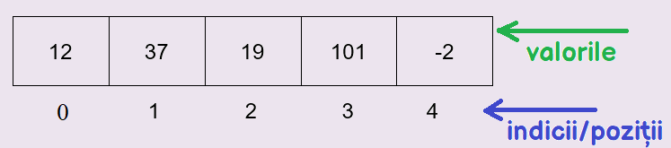

Tabele
În viața cotidiană cel mai des ne întâlnim cu situații în care apare necesitatea de prelucrare nu
unei singure valori ci a mai multor valori ce reprezintă o colecție de date. În majoritatea
cazurilor
datele sunt omogene și finite la număr.
În așa cazuri utilizăm tipuri structurate de date și cel mai des acestea sunt tabele. Există mai multe variante de această structură: tabel liniar (vector, unidimensional), tabel dreptunghic (matrice, bidimensional), tabel n-dimensional.
Vom studia mai detaliat tabel liniar. Structura dată operează cu o colecție de date (mai multe valori) care sunt grupate sub un nume, fiecare valoare fiind indexată (are o poziție) după care poate fi ușor identificată și accesată după necesitate.

În așa cazuri utilizăm tipuri structurate de date și cel mai des acestea sunt tabele. Există mai multe variante de această structură: tabel liniar (vector, unidimensional), tabel dreptunghic (matrice, bidimensional), tabel n-dimensional.
Vom studia mai detaliat tabel liniar. Structura dată operează cu o colecție de date (mai multe valori) care sunt grupate sub un nume, fiecare valoare fiind indexată (are o poziție) după care poate fi ușor identificată și accesată după necesitate.
Sintaxa declarației unui tabel liniar este:
tip_componenta numele_variabilei [lungimea];Exemplu:
- int tabel[5];
- Este declarat un tabel liniar cu denumire tabel din 5 elemente, fiecare fiind număr întreg
- float numere[17];
- Este declarat un tabel liniar cu denumire numere din 17 elemente, fiecare fiind număr real
- char litere[26];
- Este declarat un tabel liniar cu denumire litere din 26 elemente, fiecare fiind un caracter
Sintaxa declarației unui tabel dreptunghic este:
tip_componenta numele_variabilei [nr_rânduri][nr_coloane];Exemplu:
- int energie[4][7];
- Este declarat un tabel dreptunghic cu denumire energie din 28 elemente (organizate în 4 rânduri și 7 coloane), fiecare fiind număr întreg
Structura poate fi completată cu valori în mai multe moduri.
Prima variantă reprezintă chiar completarea structurii cu valori în momentul declarării, ceea ce se numește declararea cu inițializarea.
Prima variantă reprezintă chiar completarea structurii cu valori în momentul declarării, ceea ce se numește declararea cu inițializarea.

Varianta a două constă în accesarea directă după indice a componentei și înscrierea valorii
necesare.
Exemplu:
- int lumina[7];
- Fie am declarat un tabel unde vom stoca consumul energiei electrice în timp de o săptămână
- lumina[0] = 10; lumina[1] = 10; lumina[2] = 13; lumina[3] = 15; lumina[4] = 11; lumina[5] = 21; lumina[6] = 22;
- Pe rând am completat fiecare componentă al tabelului nostru
Varianta a treia constă în citirea de la tastatură a valorilor dorite.
Exemplu:
- int lumina[7];
- Fie același exemplu
- for (int i = 0; i < 7; i++) cin>> lumina[i];
- Am citit valorile de la tastatură și am completat cu ele tabelul nostru
Mai sunt variantele de completarea cu valori din fișiere externe sau chiar generarea numerelor
aleatorie pentru tabel.
Pentru exemplificare propunem o problemă: Fie să cunoaște consumul energiei electrice într-o
săptămână. Se cere
calcularea și afișarea consumului săptămânal al energiei.
- #include <iostream>
- using namespace std;
- int main()
- {
- int lumina[7], consum = 0;
- cout<<"Introduceti 7 valori zilnice ale consumului de energie electrica:"<<endl;
- for (int i = 0; i < 7; i++) {
- cin>>lumina[i];
- consum += lumina[i];
- }
- cout<<"Consumul saptamanal = "<<consum<<endl;
- return 0;
- }
Rezultatul execuției acestui program va fi:
Introduceti 7 valori zilnice ale consumului de energie electrica:
10 12 11 13 10 23 22
Consumul saptamanal = 101
Asupra valorilor unui tabel se poate de aplicat mai mulți algoritmi, insă majoritatea prelucrărilor
se bazează pe parcurgerea elementelor tabelului și realizarea unor manipulații asupra elementelor.
Parcurgerea cel mai des presupune utilizarea cilclului for în interiorul căruie se fac deja sau
verificări asupra fiecărul element, sau unele calcule/modificări, sau chiar transformări în cadrul
tabelului la nivel de pozițiile elementelor.
Vom prezenta câteva situații:
Vom prezenta câteva situații:
Numărăm elementele ce satisfac o condiție: fie numere pozitive
Exemplu:
- int numere[10] = {2, -3, 0, -8, -7, 12, 44, -84, -5, 72}, num=0 ;
- for (int i = 0; i < 10; i++)
- if (numere[i] > 0) num++;
- Este declarat un tabel cu denumire numere din 10 numere întregi înițializând cu valorile concrete și o variabilă pentru numărare numerelor pozitive ce este inițializată cu 0
- Ciclul for realizeaza parcurgerea tabelului prin fiecare indice
- În corpul ciclului for se utilizează instrucțiunea if pentru verificarea condiției cerute pentru numărarea numerelor pozitive, astfel în condiția apare accesarea fiecărui element și compararea lui cu zero; la satisfacerea condiției date se realizează incrementarea valorii variabilei num ce va păstra numărul de elemente pozitive
Modificăm elementele : fie micșorăm cu 3
Exemplu:
- int numere[10] = {2, -3, 0, -8, -7, 12, 44, -84, -5, 72};
- for (int i = 0; i < 10; i++) numere[i] -= 3;
- Avem același exemplu de tabel
- Ciclul for realizeaza parcurgerea tabelului prin fiecare indice, fiecare element este micșorat cu 3 (-3)
Modificăm elementele ce satisfac unele condiții: toate elementele negative se vor înlocui cu 0
Exemplu:
- int numere[10] = {2, -3, 0, -8, -7, 12, 44, -84, -5, 72};
- for (int i = 0; i < 10; i++)
- if (numere[i] < 0 ) numere[i] = 0;
- Avem același exemplu de tabel
- Ciclul for realizeaza parcurgerea tabelului prin fiecare indice
- Instrucțiunea if permite selectarea elementelor negative care pe urmă sunt schimbate în zero folosind instrucțiunea de atribuire
Schimbarea cu poziții a unelor elemente: primul și ultimul element se vor schimba cu poziții
Exemplu:
- int numere[10] = {2, -3, 0, -8, -7, 12, 44, -84, -5, 72}, boxa;
- boxa = numere[9];
- numere[9] = numere[0];
- numere[0] = boxa;
- Avem același exemplu de tabel și o variabilă auxiliară boxa pentru operația de schimbare a 2 valori
- Lucru cu anumite elemente din tabel nu necesită utilizarea instrucțiunii ciclice (ciclul for lipsește)
- Avem 3 instrucțiuni de atribuire pentru interschimbarea valorilor, accentul se pune pe indicarea pozițiilor elementelor ce trebuie să se interschimbe. Reamintim primul element se află pe poziția 0, ultimul pe poziția n-1, unde n este lungimea tabelului.
Remarcă:
Un compartiment aparte reprezintă Algoritmi de sortare a tabelelor. Pentru a face cunoștința cu
acestea va propun materiale suplimentare sub forma de resurse video
(sortarea prin dansuri)
sau resurse online pe site-uri terțe.
Vizualizarea sau compararea diferitor sortări se poate de privit în următoarea secvența
video .
Sarcina:
Elaborați un program ce va realiza: Într-un tabel de numere întregi, lungimea căruia se citește de la tastatură,
cât și valorile acestuia de numărat de câte ori apare cifra 1.
Pentru realizarea sarcinii puteți utiliza zona de mai jos a editorului.
Mai multe probleme puteți găsi în
Problemar pag.52-57,
64-73.
Pentru realizarea sarcinii puteți utiliza zona de mai jos a editorului.